%%{init: {'theme': 'base', 'themeVariables': {'background': '#FFFFFF', 'primaryColor': '#FFFFFF', 'primaryBorderColor': '#E5E5EA', 'primaryTextColor': '#1D1D1F', 'lineColor': '#86868B', 'secondaryColor': '#F5F5F7', 'tertiaryColor': '#FFFFFF', 'mainBkg': '#FFFFFF', 'nodeBorder': '#E5E5EA', 'clusterBkg': '#F5F5F7', 'clusterBorder': '#E5E5EA', 'titleColor': '#1D1D1F', 'edgeLabelBackground': '#FFFFFF'}}}%%
flowchart LR
A[Block 7: CPU] -->|Alleskönner| B[Kontrollfluss]
C[Heute: NPU] -->|Spezialist| D[Datenfluss / KI]
style C fill:#FFFFFF,stroke:#E2001A,stroke-width:2px !important
08 · KI-Beschleuniger & Edge AI
Mikrocomputertechnik 3 · Von der Memory-Wall neuronaler Netze zu Systolic Arrays und TensorFlow Lite
Prof. Dr.-Ing. Daniel Klünder
Willkommen zu Block 8!
- Willkommen zur achten Vorlesung in Mikrocomputertechnik 3
- Block 7: OoO und Branch Prediction maximieren die General-Purpose-CPU
- Heute: Workload Künstliche Intelligenz — und warum Spezialhardware (NPUs) hilft
- Ziel: Memory Wall bei neuronalen Netzen verstehen und den Weg zu DSAs skizzieren
Anknüpfung: Compiler-Labor
Kurz-Recap aus Block 7 (Vertiefung im Übungsblatt):
- Godbolt zeigt die Übersetzung, kein OoO-Timing
-O3garantiert weder Unrolling noch kürzere Laufzeit- Scheduling und Unrolling sind mögliche, keine sicheren Folgen
- Eine MAC-Kette bleibt RAW. Mehrere Akkumulatoren können unabhängig sein
Grenze der General-Purpose-CPU
- Mehr Issue-Breite verteuert Scheduler, Ports und Bypass. Quadratisch gilt nicht pauschal für ROB, Renaming und Decode zusammen
- OoO kann Loads überlappen. Es hebt eine einzelne Akkumulatorkette nicht auf
- DLP ergänzt ILP. SIMD ist eine Umsetzung, keine Definition von DLP
Neuer Workload: Edge AI
- Edge AI umfasst Endgerät und Gateway. Nicht jede lokale Inferenz braucht eine NPU
- Beispiele: Schrittzählung, Wake-Word, Vibrationsdiagnose an Maschinen
- Dauerbetrieb auf knappen Ressourcen (Energie, SRAM, Flash)
Cloud AI vs. Edge AI
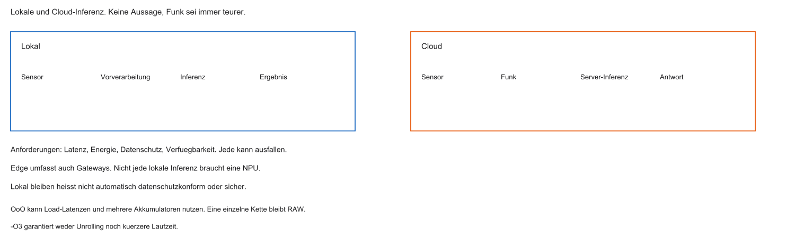
Warum nicht alles in die Cloud?
- Latenz — sicherheitskritische Reaktionen dulden keine Funkwartezeit
- Privacy — Audio/Video sollen oft lokal bleiben
- Energie und Verfügbarkeit sind Anforderungen. Funk ist nicht immer teurer als lokale Rechnung
%%{init: {'theme': 'base', 'themeVariables': {'background': '#FFFFFF', 'primaryColor': '#FFFFFF', 'primaryBorderColor': '#E5E5EA', 'primaryTextColor': '#1D1D1F', 'lineColor': '#86868B', 'secondaryColor': '#F5F5F7', 'tertiaryColor': '#FFFFFF', 'mainBkg': '#FFFFFF', 'nodeBorder': '#E5E5EA', 'clusterBkg': '#F5F5F7', 'clusterBorder': '#E5E5EA', 'titleColor': '#1D1D1F', 'edgeLabelBackground': '#FFFFFF'}}}%%
flowchart LR
A[Sensordaten] -->|lokal| B[Edge-NPU]
A -.->|Funk| C[Cloud]
style B fill:#FFFFFF,stroke:#E2001A,stroke-width:2px !important
Agenda
- KI-Herausforderung und Memory Wall
- DSPs und SIMD
- RISC-V Vector Extension (RVV)
- NPU und Systolic Arrays
- Edge-AI-Software / TensorFlow Lite
Lernziele Block 8
- Memory Wall bei Matrix-/MAC-Lasten erklären
- MAC-Operation und ihre Bedeutung benennen
- ILP vs. DLP unterscheiden
- Systolic Arrays einordnen
- TensorFlow Lite Micro Workflow skizzieren
Die Leitfrage des Tages
- Kleines Netz: z. B. \(10^{6}\) Gewichte — Inferenz verrechnet sie mit Aktivierungen
- SRAM, Cache-Hit, Flash und DRAM haben verschiedene Kosten. Nicht jeder Zugriff ist ein DRAM-Miss
- Wie rechnet man Millionen MACs/s auf knapper Energie, ohne am Speicher zu ersticken?
%%{init: {'theme': 'base', 'themeVariables': {'background': '#FFFFFF', 'primaryColor': '#FFFFFF', 'primaryBorderColor': '#E5E5EA', 'primaryTextColor': '#1D1D1F', 'lineColor': '#86868B', 'secondaryColor': '#F5F5F7', 'tertiaryColor': '#FFFFFF', 'mainBkg': '#FFFFFF', 'nodeBorder': '#E5E5EA', 'clusterBkg': '#F5F5F7', 'clusterBorder': '#E5E5EA', 'titleColor': '#1D1D1F', 'edgeLabelBackground': '#FFFFFF'}}}%%
flowchart TD
A[RAM: Gewichte] -->|Flaschenhals| B[ALU]
B --> C[Ergebnis]
style A fill:#FFFFFF,stroke:#E2001A,stroke-width:2px !important
Aufgabe — Sechs MACs
\(W=\begin{bmatrix}1&2&3\\0&-1&4\end{bmatrix}\), \(x=\begin{bmatrix}2\\1\\3\end{bmatrix}\), \(b=\begin{bmatrix}1\\-2\end{bmatrix}\).
Warum sind sechs Gewichte hier sechs produktbezogene MACs, bei einer Faltung aber nicht? Was ist \(y\)?
Neuronale Netze auf Hardware-Ebene
- Abseits des Hypes: große Zahlenarrays
- Inputs / Activations: Sensordaten (z. B. \(28\times 28\) Pixel)
- Weights: trainierte Konstanten (oft Flash)
- Neuron: gewichtete Summe der Eingänge (+ Aktivierung, hier ausgeblendet)
Mathematik: Matrix / Dot Product
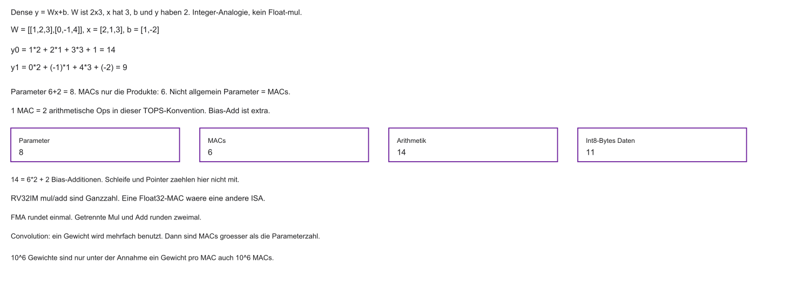
- Kein Kontrollfluss-Chaos: vorhersagbarer Datenstrom
- Naive Lehrzählung ohne Registerreuse: zwei Loads, eine Multiplikation, eine Addition. Das ist keine Übersetzung in Assembler
MAC-Operation
- Multiply-Accumulate: \(a \leftarrow a + (w \times x)\)
- \(w\): Gewicht, \(x\): Activation, \(a\): Akkumulator
- KI-Chips: oft in TOPS (viele MAC-Äquivalente / s) spezifiziert — nicht nur in MHz
Anatomie einer MAC auf RISC-V
Vereinfachte Befehlsfolge:
mul/addsind hier Ganzzahl, die C-Schleife darüber ist Float. Das ist eine Analogie, keine Float-ISA- Zwei Loads und zwei Ops gelten nur ohne Wiederverwendung und ohne FMA
Arithmetic Intensity: Zahlenbeispiel
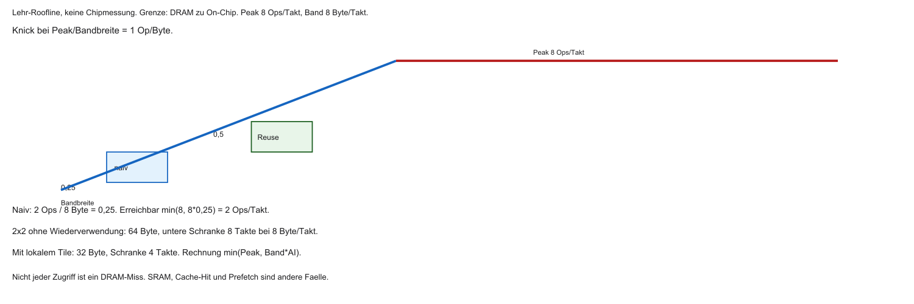
- \(\mathrm{AI} = \mathrm{Ops}/\mathrm{Bytes}\)
- Grenze dieses Beispiels: DRAM zum On-Chip-Speicher. Output und Bias zählen hier noch nicht
- \(2\) Ops und \(8\) Byte ergeben \(0{,}25\) Ops/Byte. Das ist nicht allgemein „unter 1 = memory-bound“
- Erreichbar ist \(\min(P_{peak}, Bandbreite \times AI)\). Der Knick liegt bei \(P_{peak}/Bandbreite\)
Datenproblem: Gewichte
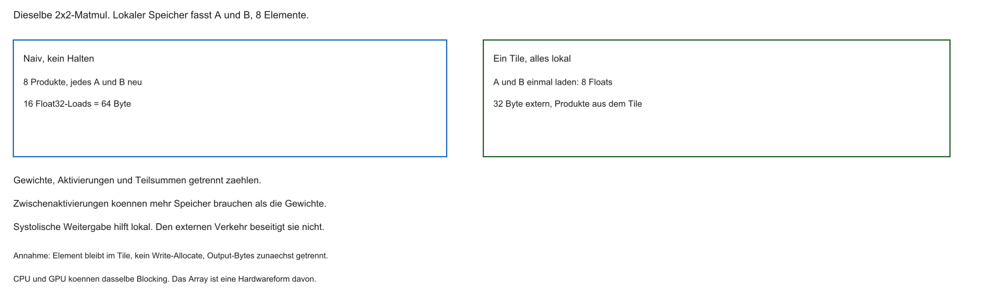
- Modelle wie ResNet-50: Millionen Parameter — Megabyte-Bereich
- L1 oft nur Dutzende KiB → Matrizen passen nicht
- Ein Streaming-Datensatz erzeugt nicht bei jedem Skalarzugriff einen Capacity Miss. Cachezeilen und Prefetch bündeln Zugriffe
Memory Wall bei KI
| Phase | Typische Dauer (schematisch) |
|---|---|
| Load \(x\), \(w\) (DRAM) | viele Takte |
| MUL + ADD | wenige Takte |
| nächster Load | wieder viele Takte |
- ALU oft idle; Energie geht in Wartezeit und Datentransport
Rechenbeispiel: \(10^{6}\) MACs
- \(10^{6}\) Gewichte sind nur dann \(10^{6}\) MACs, wenn jedes Gewicht genau einmal multipliziert wird
- Eine Faltung nutzt Gewichte mehrfach. Sequenz, Bild und Batch ändern den Aufwand
- Einzelne Miss-Latenzen darf man nicht zu einer Summe addieren, wenn Zugriffe überlappen
Warum OoO hier wenig hilft
- OoO/Predictor: stark bei unregelmäßigem Kontrollfluss
- MAC-Schleife: linear, hoch vorhersagbar
- Der Predictor ist bei einer festen Schleife nicht wertlos, aber selten der Engpass
- Unabhängige Akkumulatoren kann OoO ausführen. Die Speichergrenze bleibt, wenn die Arithmetic Intensity niedrig ist
Fazit: CPU vs. KI-Last
- ALU-Auslastung bei naiver Matrixrechnung oft gering
- Viel Zeit/Energie in Transport und Instruktionsverwaltung
- Spezialhardware kann passen, wenn Operatoren, Form und Auslastung sie nutzen
Lösung: Data-Level Parallelism (DLP)
- Weg von „viele verschiedene Instruktionen“ (ILP)
- DLP: dieselbe Rechnung an vielen Werten. SIMD ist eine mögliche Umsetzung, nicht die Definition
- Hundert unabhängige Produkte brauchen weder hundert Rechenwerke noch einen Takt
Domain-Specific Architecture (DSA)
- Eine DSA kann Formate und Operatoren einschränken. Programmierbarkeit muss nicht vollständig entfallen
- DSA: Silizium für eine Domäne (z. B. Matrizen) — oft deutlich effizienter
- Evolutionsschritte: SIMD → DSP-Tricks → Vektoren → NPUs
Fragen? — MAC und Memory Wall
- Was leistet die MAC-Operation im Netz?
- Warum kehrt die Memory Wall bei KI zurück?
- ILP vs. DLP?
Was bedeutet SIMD?
- SIMD: Single Instruction, Multiple Data
- Paradebeispiel für DLP
- Ein Fetch/Decode → intern mehrere parallele Operationen
SIMD-Prinzip
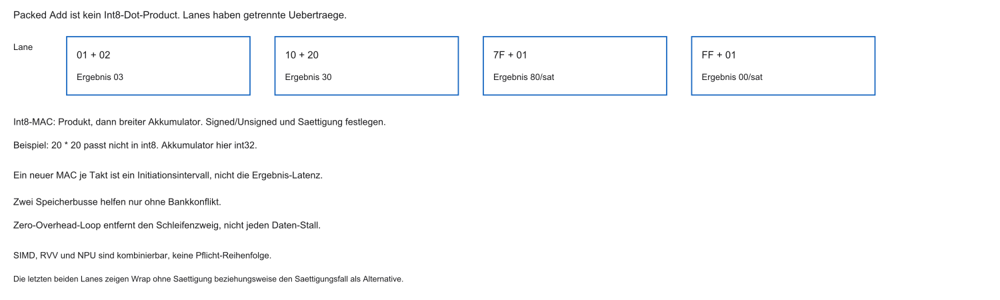
- Skalar (SISD):
add→ eine Addition - SIMD: ein Befehl → mehrere parallele Adds auf Daten-Lanes
%%{init: {'theme': 'base', 'themeVariables': {'background': '#FFFFFF', 'primaryColor': '#FFFFFF', 'primaryBorderColor': '#E5E5EA', 'primaryTextColor': '#1D1D1F', 'lineColor': '#86868B', 'secondaryColor': '#F5F5F7', 'tertiaryColor': '#FFFFFF', 'mainBkg': '#FFFFFF', 'nodeBorder': '#E5E5EA', 'clusterBkg': '#F5F5F7', 'clusterBorder': '#E5E5EA', 'titleColor': '#1D1D1F', 'edgeLabelBackground': '#FFFFFF'}}}%%
flowchart LR
A[SIMD Add] --> B{Verteiler}
B --> A1[ALU1]
B --> A2[ALU2]
B --> A3[ALU3]
B --> A4[ALU4]
style A fill:#FFFFFF,stroke:#E2001A,stroke-width:2px !important
Packed SIMD
- Problem: schmale ISA-Register, breite Parallelität?
- Lösung: Register in Lanes zerlegen (z. B. 32 Bit → \(4\times 8\) Bit)
- SIMD-Op: Lane für Lane parallel, ohne Carry zwischen Lanes
Digital Signal Processors (DSPs)
- Vor dem KI-Boom: DSPs für Audio, Modem, Filter
- Algorithmen (FIR etc.): wie KI stark Array-/Skalarprodukt-lastig
- Vorläufer vieler NPU-Ideen
DSP: dedizierte MAC-Einheit
- Mul und Add oft fest verdrahtet als eine MAC
- \(a + (x \times w)\) in wenigen Takten / oft einem Zyklus (je nach Design)
- Weniger Instruktionsfolge als auf skalarer RISC-ALU
Super-Harvard in DSPs
- Mehrere parallele Speicherpfade gegen die Memory Wall
- Typisch: Code-Bus + getrennte Datenbusse für \(x\) und \(w\)
- Loads und MAC können im selben Takt überlappen
Zero-Overhead Loops
- Hardware-Schleifenzähler: Start, Ende, Count
- Kein
beqpro Iteration — kein Predictor-Overhead - PC-Wrap in Hardware bis Count abgelaufen
Grenze: Packed SIMD skaliert schlecht
- Feste Vektorbreite in der ISA (z. B. 128 / 256 / 512 Bit)
- Alter Code nutzt neue breitere Units nicht automatisch
- Oft Neukompilieren / Intrinsics für jede Generation
Instruction-Fetch-Overhead bleibt
- Auch breites SIMD: weiterhin viele Instruktionen für große Matrizen
- Decode und I-Cache kosten Energie
- Wunsch: „rechne lange auf diesen Daten“ mit weniger Instruction Stream
Übergang zu Vektoren
- Packed SIMD hat eine feste Breite. RVV wählt die aktive Elementzahl zur Laufzeit
- RISC-V Vector Extension (RVV): Ansatz für skalierbare Vektor-ISAs
- Code-Idee: dieselbe Software auf schmalen und breiten Implementierungen
Kurzfazit: DSP und SIMD
- DLP ist die Datenparallelität. SIMD nutzt sie mit einem gemeinsamen Operationstyp
- Packed SIMD: breite Register, starre Breiten
- DSPs: MAC, Multi-Bus, Zero-Overhead Loops
- Vektoren und NPUs können bei passenden Operatoren helfen. Ein DSP ist dadurch nicht veraltet
Fragen? — SIMD und DSP
- Wie senkt SIMD den Fetch/Decode-Overhead?
- Warum ist eine Hardware-MAC für Signalverarbeitung wertvoll?
- Warum muss Packed-SIMD-Code oft neu angepasst werden?
Echte Vektor-Architektur
- Verarbeitet lineare Arrays (Vektoren), nicht nur Skalare
- Anders als Packed SIMD: Vektorlänge flexibel, nicht in feste Registerhäppchen geschnitten
- Befehlssatz abstrahiert: „Addiere Vektor A und B“ — unabhängig von der Implementierungsbreite
Vektor-Register-File
- Neben
x0–x31: Vektorregisterv0–v31 - Jedes
v-Register hält viele Elemente gleichzeitig - Kapazität hängt von der Implementierung ab (\(\mathrm{VLEN}\) = Vector Length)
RISC-V Vector Extension (RVV)
- Offizielle RISC-V-Erweiterung für Vektormathematik (u. a. ML, Krypto)
- Neue Instruktionen, z. B.
vadd.vv - Software kennt die physische Breite oft nicht (Watch vs. Server)
- Frage: ein Binary für unbekannte \(\mathrm{VLEN}\)?
vsetvli / hardware-agnostisch
- Software: „Array mit \(N\) Elementen“
- Bei LMUL \(= 1\) ist \(\mathrm{VLMAX} = \mathrm{VLEN}/\mathrm{SEW}\). Allgemein \(\mathrm{VLMAX} = \mathrm{LMUL}\times\mathrm{VLEN}/\mathrm{SEW}\)
vsetvliliefert nicht immer \(\min(AVL, VLMAX)\)- Schleife läuft in Hardware-Schritten durch das Array
Ein Binary, viele \(\mathrm{VLEN}\)
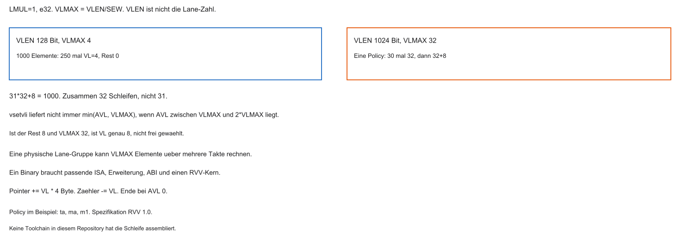
Beispiel: 1000 Elemente, vadd.vv (schematisch)
| Plattform | Breite (schematisch) | \(\mathrm{VL}\) (e32) | Schleifenläufe |
|---|---|---|---|
| Edge | schmal (z. B. 128 Bit) | 4 | 250 |
| Server | 1024 Bit, LMUL 1 | 32, dann 20+20 oder 32+8 | 32 |
Gleiche RVV-Schleifenidee skaliert mit \(\mathrm{VLEN}\) — ohne feste Packed-SIMD-Breite im Quelltext.
Energie: weniger Instruction Fetch
- Architektonisch viele Elemente je Befehl. Physisch kann dieselbe Lane sie über mehrere Takte rechnen
- Skalar: dutzende Loads/Adds/Branches aus dem I-Cache
- Weniger Fetch kann Energie sparen und garantiert keinen geringeren Gesamtverbrauch
Vector Load/Store
- Breite Speicherpfade zum D-Cache / SRAM
vle32.v: zusammenhängender Block → Vektorregister- Ähnlich Burst-Idee: DRAM-/Bus-Lokalität besser ausnutzen
Chaining
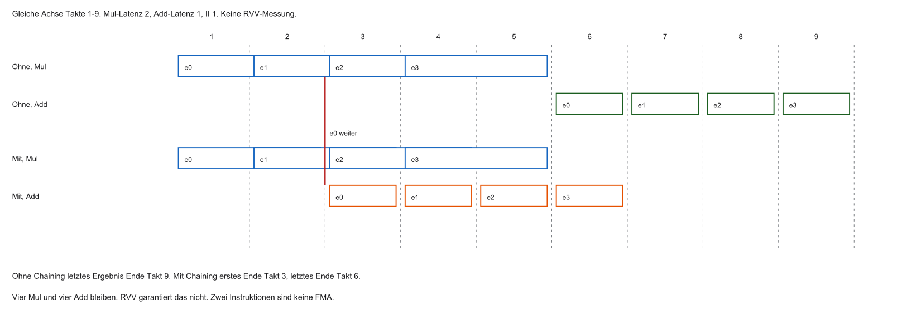
- MAC: Mul dann Add — Zwischenergebnis sonst zurück ins Registerfile
- Chaining ist eine Option des Kerns. Eine FMA ist eine andere Instruktion mit einer Rundung
- Weniger Registerverkehr, höherer Durchsatz
RVV und TinyML
- TinyML: Inferenz auf sehr knappen Energie-/SRAM-Budgets
- RVV-fähige Kerne: flexibel (noch volle CPU) + Vektor-Durchsatz
- Typisch: Keyword Spotting, kleine Sensor-Modelle am Edge
Grenzen von Vektoren
- Registerfile bleibt: lesen/schreiben kostet Energie und limitiert Skalierung
- Ein großes Modellfile beweist den Registerengpass nicht. Form und Reuse entscheiden
- Nächste Stufe: Daten fließen ohne ständiges Zurückschreiben — Systolic Arrays
Kurzfazit RVV
- Die Software verarbeitet lange Arrays in Stücken der Länge VL
- VLEN ist die Registerbreite in Bit, VL die aktive Elementzahl
- Dieselbe Binärdatei braucht passende ISA, XLEN und ABI
- Weniger Befehlsstrom kann helfen. DLP ist die Datenparallelität, nicht der Befehl selbst
- Loads und Chaining können Wartezeit senken. Chaining ist keine RVV-Garantie
Aufgabe — AVL 40
VLMAX ist 32. Nach 30 Schritten mit VL 32 bleiben 40 Elemente. Welche letzten VL-Werte sind zulässig, und wie viele Iterationen ergeben 1000 Elemente?
Was ist eine NPU?
- Neural Processing Unit: Beschleuniger für Inferenz (manchmal Training)
- Namen: TPU (Google), Neural Engine (Apple), NVDLA, …
- Nicht jede NPU ist ein systolisches Gitter oder nur für Matrizen. Kontrolle bleibt im System
- CPU füttert Adressen/Puffer (ähnlich DMA-Aufträgen)
NPU vs. GPU vs. CPU
| Optimierung | Stärke | Schwäche | |
|---|---|---|---|
| CPU | Latenz, Kontrollfluss | flexibel, auch kleine Modelle | braucht passende Datenversorgung |
| GPU | Durchsatz, viele Threads | programmierbar, breite Lasten | Energie hängt von Modell und Batch ab |
| NPU | unterstützte neuronale Operatoren | viele lokale MACs bei passender Form | unpassende Operatoren bleiben auf der CPU |
Kombination ist möglich. Milliwatt gegen Watt ohne Messung bleibt offen.
Flaschenhals: Register / Verdrahtung
- Wunsch: zehntausende MACs/Takt
- Jede MAC braucht Operanden — unmöglich, unendlich viele Ports zum SRAM
- Routing und Multiplexer begrenzen die Breite
- Lösung: Daten lokal zwischen Zellen weiterreichen
Systolic Arrays
- 2D-Gitter aus MAC-Zellen
- Nur der Rand spricht mit dem Speicher
- Ergebnisse/Operanden wandern zu Nachbarn — ohne Systembus pro Schritt
„Systolisch“ — Namensbild
- Systole: rhythmische Pumpwelle
- Takt pumpt Werte wellenartig durch das Gitter
- Pro Zyklus: Daten eine Zelle weiter (rechts/unten je nach Dataflow)
Eine systolische Zelle
Pro Takt typisch:
- Empfängt \(x\) (links) und \(w\) (oben)
- MAC auf interne Teilsumme
- Reicht \(x\) nach rechts und \(w\) nach unten weiter
%%{init: {'theme': 'base', 'themeVariables': {'background': '#FFFFFF', 'primaryColor': '#FFFFFF', 'primaryBorderColor': '#E5E5EA', 'primaryTextColor': '#1D1D1F', 'lineColor': '#86868B', 'secondaryColor': '#F5F5F7', 'tertiaryColor': '#FFFFFF', 'mainBkg': '#FFFFFF', 'nodeBorder': '#E5E5EA', 'clusterBkg': '#F5F5F7', 'clusterBorder': '#E5E5EA', 'titleColor': '#1D1D1F', 'edgeLabelBackground': '#FFFFFF'}}}%%
flowchart TD
W[w von oben] --> Z[MAC-Zelle]
X[x von links] --> Z
Z --> R[x nach rechts]
Z --> U[w nach unten]
style Z fill:#FFFFFF,stroke:#E2001A,stroke-width:2px !important
Weniger RAM-Zugriffe
- Ein Wert wird einmal eingespeist und wandert durch viele Zellen
- Viele MACs ohne erneuten Cache-/DRAM-Load
- Im Lehrfall steigt die Intensity von 0,25 auf 0,5 Op/Byte. Der Knick liegt bei 1
Datenfluss füllt das Array
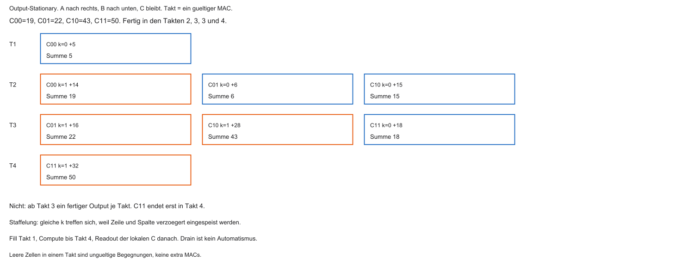
\(2\times 2\)-Idee (schematisch):
- Takt 1: erste Paare treffen sich, Summen starten
- Takt 2: Wellen wandern, neue Werte am Rand
- Im 2×2-Output-Stationary-Beispiel enden die vier Summen in den Takten 2, 3, 3 und 4
- Das ist kein Ergebnis je Takt ab Takt 3. Readout der lokalen Summen kommt danach
Weight-Stationary
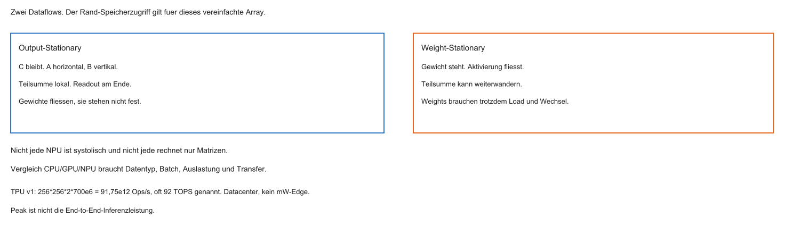
- Gewichte während einer Inferenz oft konstant
- Variante: Weights in Zellen „parken“, nur Activations durchschieben
- Weniger Bewegungen der großen Konstanten-Matrizen
Beispiel: Google TPU v1
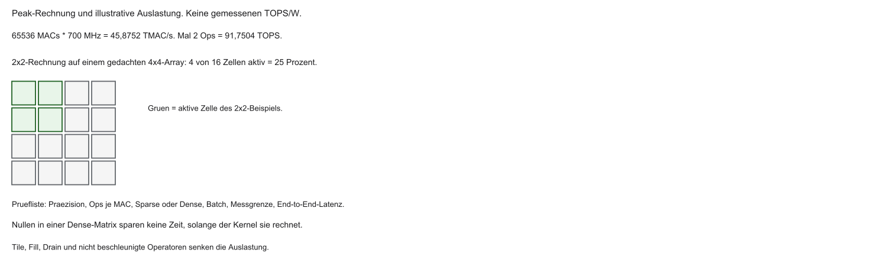
- \(256\times 256 = 65\,536\) Int8-MACs. Bei 700 MHz sind das 45,8752 TMAC/s
- Mit zwei Ops je MAC: 91,7504 TOPS, in der Originalarbeit oft 92 TOPS. Das ist Peak, kein End-to-End
- TPU v1 ist ein Datacenter-Baustein, kein Milliwatt-Edge-Teil
NPUs am Edge
- SoCs mit kleineren Arrays (z. B. \(32\times 32\) / \(64\times 64\))
- CPU, Vorverarbeitung und NPU gehören zusammen. Ein Betriebssystem ist optional
- Die CPU schläft nur, wenn Versorgung, Wakeup und übrige Aufgaben das erlauben
Grenzen systolischer Arrays
- Starr an Array-/Tile-Größen — Padding bei ungünstigen Layern
- Dense-Matrizen stark; Sparse (viele Nullen) weniger effizient
- Kein General Purpose — kein TCP/IP-Stack auf der NPU
Kurzfazit NPU
- Systolic Arrays: lokale Weitergabe statt Von-Neumann-Pendeln
- Wellenartiger Datenfluss, hohe Wiederverwendung
- Weight-Stationary spart Bewegungen
- TOPS je Watt brauchen gemessene Leistung derselben Grenze, nicht nur den Peak
Aufgabe — Takt 4
Wann ist C11 im 2×2-Output-Stationary-Beispiel fertig? Ist 92 TOPS eine End-to-End-Leistung?
Edge-AI-Software: das Problem
- Training oft in Python (TensorFlow/PyTorch) auf GPUs — große Float32-Modelle
- MCU: kein Python, knappes SRAM, oft keine FPU
- Wie wird das Cloud-Modell zu Bare-Metal-C?
TensorFlow Lite for Microcontrollers (TFLM)
- Kleine C++-Runtime. Ohne verpflichtendes OS und mit Arena möglich. Der übrige Stack ist nicht automatisch heapfrei
- Nimmt kompaktes Modell, interpretiert Layer (Conv2D, Dense, …)
- Rechnet mit Firmware-Kerneln. Eine NPU braucht ein passendes Backend, nicht nur das Silizium
Workflow Embedded AI
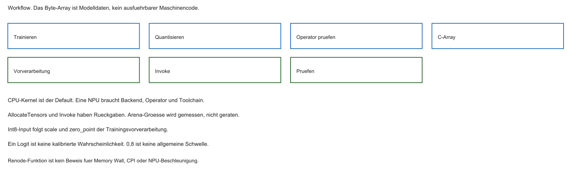
- Trainieren (Cloud / Python)
- Konvertieren →
.tflite - Export als C-Byte-Array (
xxdo. Ä.) - Linken in Flash (
.rodata) - Firmware:
Invoke()/ Interpreter
Quantisierung
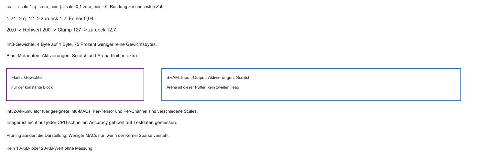
- Float32: 4 Byte/Gewicht, teuer ohne FPU
- Reine Float32-Gewichte werden als Int8 um 75 Prozent kleiner. Bias, Aktivierungen und Arena nicht automatisch
- Integer ist nicht auf jeder CPU schneller. Den Accuracy-Verlust messen, nicht annehmen
Pruning
- Viele Gewichte nahe null nach dem Training
- Pruning braucht eine sparsityfähige Darstellung und einen passenden Kernel
- Flash-Ersparnis und weniger ausgeführte MACs sind zwei verschiedene Folgen
Geplante Aktivitätserkennung
Geplanter Anwendungsfall, kein vorhandenes Labor:
- Unter 20 KB ist ein hypothetisches Modellziel, kein vorhandenes Modell
- Ein 3-Achsen-Fenster wäre später an die I2C-Pipeline anzuschließen
- Klassen Stehen, Gehen, Laufen sind noch kein Schrittzähler
- Renode,
.replund Runtime liegen hier nicht vor
Modell als C-Array
Tensor Arena
- 1024 Byte Arena sind eine Lehrannahme
- Der lokale Interpreter der alten Fassung endete mit der Funktion
Inferenz-Zyklus
/* Pseudocode. src hat m Float32-Werte, das Ziel m Int8-Elemente. */
int run_window(const float *src, size_t m) {
if (!ready || src == 0) return -1;
if (input_elements() != m) return -6;
for (size_t i = 0; i < m; i++)
input_i8[i] = quantize_f32(src[i]);
if (invoke() != 0) return -8;
return status_only(); /* Klasse und Score getrennt */
}sizeofeines Zeigers zählt nicht die Fensterelemente- Drei Ausgabebytes beweisen keine drei Klassen und keine Schrittzahl
Renode: virtuelle Stimuli
- Geplanter späterer Ausblick. Keine .repl und kein Modell liegen vor
- Eine Konsole wäre eine funktionale Beobachtung, keine Zyklusmessung
Erwartung: CPU ohne NPU
- RV32IM ohne FPU kann Float in Software rechnen. Der Aufwand ist hier nicht gemessen
- Eine funktionale Simulation belegt weder die Memory Wall noch eine NPU-Beschleunigung
- Int8 auf der CPU kann sinnvoll sein. Eine CPU ohne NPU ist nicht automatisch falsch
Zusammenfassung Block 8
- DLP ist Datenparallelität. SIMD und RVV sind Umsetzungen, keine Definition
- Systolische Arrays reduzieren bestimmten globalen Verkehr und brauchen Fill und Readout
- TFLM-Bytes sind Modelldaten. Die Kernel führen die Operatoren aus
- Quantisierung spart bestimmte Gewichtbytes, keine garantierte Genauigkeit
Ausblick und Abschluss
- Geplante Aktivitätserkennung, hier nicht ausgeführt
- Es fehlen Modell, Tensorvertrag, Kernel und Plattform
Vielen Dank.